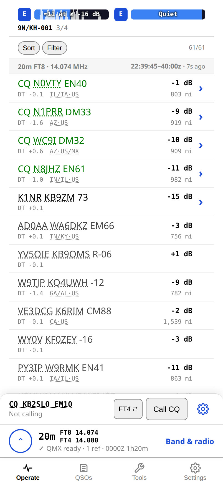

Made for the summit
Tune your antenna from your phone.
Stand at the wire, not at the radio. Tick the bands and run an SWR sweep: the station sends a short carrier at each point and plots the whole curve, with the lowest point on each band named.
Adjust the wire and run it again. Your last run stays faintly behind the new one.
It reads SWR through the QMX’s own meter, inside the bands your radio has. For a true reading, set the QMX’s Tune power to 25% or more; each run is labelled with it.

And the rest of an activation.
-
Four for the summit, ten for the park
Set your summit or park and Operate counts the day’s contacts toward the activation and flags stations you have already worked.
-
Nothing on the summit needs a network
The station runs its own Wi‑Fi: no router, no internet, no app store. The app and the map are served by the station, so even the first setup needs no network.
-
One power bank, or your phone
The boards run over USB‑C from the same power bank as the radio, or straight from your phone’s USB‑C port.
-
Logs ready to upload
SOTA logs carry the summit reference. POTA logs download as
.adifiles, one per park, with a two-fer split the way POTA asks, and have been accepted by pota.app for credit.
